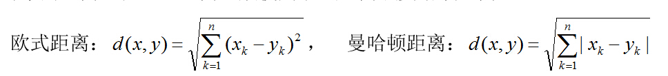
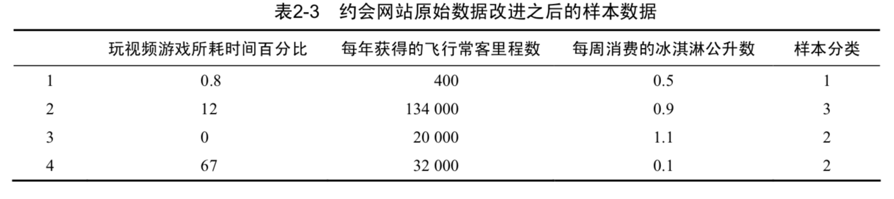

<!DOCTYPE html>
<html lang="" class="loading">
<head><meta name="generator" content="Hexo 3.8.0">
    <meta charset="UTF-8">
    <meta http-equiv="X-UA-Compatible" content="IE=edge,chrome=1">
    <meta name="viewport" content="width=device-width, minimum-scale=1.0, maximum-scale=1.0, user-scalable=no">
    <title>eggTargaryen</title>

    <meta name="apple-mobile-web-app-capable" content="yes">
    <meta name="apple-mobile-web-app-status-bar-style" content="black-translucent">
    <meta name="google" content="notranslate">
    <meta name="keywords" content="eggTargaryen,"> 
    <meta name="description" content="个人简介：1994-2013:呆在山东潍坊​        在这里长大，读完小初高，还有大学预科班，哈哈。        
2013-2017: 呆在湖北武汉​        在wuli度过了马马虎,"> 
    <meta name="author" content="eggTargaryen"> 
    <link rel="alternative" href="atom.xml" title="eggTargaryen" type="application/atom+xml"> 
    <link rel="icon" href="/img/logo.png"> 
    <link rel="stylesheet" href="//cdn.jsdelivr.net/npm/gitalk@1/dist/gitalk.css">
    <link rel="stylesheet" href="/css/diaspora.css">
</head>
</html>
<body class="loading">
    <div id="loader"></div>
    <div id="single">
    <div id="top" style="display: block;">
    <div class="bar" style="width: 0;"></div>
    <a class="icon-home image-icon" href="javascript:;"></a>
    <div title="播放/暂停" class="icon-play"></div>
    <h3 class="subtitle">k-近邻算法</h3>
    <div class="social">
        <!--<div class="like-icon">-->
            <!--<a href="javascript:;" class="likeThis active"><span class="icon-like"></span><span class="count">76</span></a>-->
        <!--</div>-->
        <div>
            <div class="share">
                <a title="获取二维码" class="icon-scan" href="javascript:;"></a>
            </div>
            <div id="qr"></div>
        </div>
    </div>
    <div class="scrollbar"></div>
</div>
    <div class="section">
        <div class="article">
    <div class="main">
        <h1 class="title">k-近邻算法</h1>
        <div class="stuff">
            <span>十一月 12, 2018</span>
            
  <ul class="post-tags-list"><li class="post-tags-list-item"><a class="post-tags-list-link" href="/tags/k-nn/">k-nn</a></li></ul>


        </div>
        <div class="content markdown">
            <h1 id="1-什么是k-近邻算法？"><a href="#1-什么是k-近邻算法？" class="headerlink" title="1. 什么是k-近邻算法？"></a>1. 什么是k-近邻算法？</h1><p>​    K最近邻(k-Nearest Neighbor，KNN)分类算法，是一个理论上比较成熟的方法，也是最简单的机器学习算法之一。该方法的思路是：如果一个样本在特征空间中的k个最相似(即特征空间中最邻近)的样本中的大多数属于某一个类别，则该样本也属于这个类别。</p>
<p>算法的伪码表示：</p>
<p>(1) 计算已知类别数据集中的点与当前点之间的距离; </p>
<p>(2) 按照距离递增次序排序;</p>
<p>(3) 选取与当前点距离最小的k个点;</p>
<p>(4) 确定前k个点所在类别的出现频率;</p>
<p>(5) 返回前k个点出现频率最高的类别作为当前点的预测分类。 </p>
<p>tips：</p>
<p>这里的距离一般使用：</p>
<p></p>
<p>如果特征数据之间量级差别较大的需要进行归一化处理，不然，量级较大的数据对预测的影响将会覆盖其他特征列。</p>
<p><br>在处理这种不同取值范围的特征值时，我们通常采用的方法是将数值归一化，如将取值范围 处理为0到1或者-1到1之间。下面的公式可以将任意取值范围的特征值转化为0到1区间内的值:<br>newvalue=(oldvalue-min)/(max-min)<br>其中min和max分别是数据集中的该特征列的最小特征值和最大特征值。虽然改变数值取值范围增加了分类器的复杂度，但为了得到准确结果，我们必须这样做。<br>在测试过程中也要对测试数据执行归一化操作。</p>
<h1 id="2-k-近邻算法优缺点"><a href="#2-k-近邻算法优缺点" class="headerlink" title="2. k-近邻算法优缺点"></a>2. k-近邻算法优缺点</h1><p><strong>优点</strong></p>
<ul>
<li>简单好用，容易理解，精度高，理论成熟，既可以用来做分类也可以用来做回归；</li>
<li>可用于数值型数据和离散型数据；</li>
<li>训练时间复杂度为O(n)；无数据输入假定；</li>
<li>对异常值不敏感</li>
</ul>
<p><strong>缺点</strong></p>
<ul>
<li>计算复杂性高；空间复杂性高；</li>
<li>样本不平衡问题（即有些类别的样本数量很多，而其它样本的数量很少）；</li>
<li>一般数值很大的时候不用这个，计算量太大。但是单个样本又不能太少，否则容易发生误分。</li>
<li>最大的缺点是无法给出数据的内在含义。</li>
</ul>
<h1 id="3-代码实战"><a href="#3-代码实战" class="headerlink" title="3. 代码实战"></a>3. 代码实战</h1><p>基础代码：</p>
<figure class="highlight python"><table><tr><td class="gutter"><pre><span class="line">1</span><br><span class="line">2</span><br><span class="line">3</span><br><span class="line">4</span><br><span class="line">5</span><br><span class="line">6</span><br><span class="line">7</span><br><span class="line">8</span><br><span class="line">9</span><br><span class="line">10</span><br><span class="line">11</span><br><span class="line">12</span><br><span class="line">13</span><br><span class="line">14</span><br><span class="line">15</span><br><span class="line">16</span><br><span class="line">17</span><br><span class="line">18</span><br><span class="line">19</span><br><span class="line">20</span><br><span class="line">21</span><br><span class="line">22</span><br><span class="line">23</span><br><span class="line">24</span><br><span class="line">25</span><br><span class="line">26</span><br><span class="line">27</span><br><span class="line">28</span><br><span class="line">29</span><br><span class="line">30</span><br><span class="line">31</span><br><span class="line">32</span><br><span class="line">33</span><br><span class="line">34</span><br><span class="line">35</span><br><span class="line">36</span><br><span class="line">37</span><br><span class="line">38</span><br><span class="line">39</span><br><span class="line">40</span><br></pre></td><td class="code"><pre><span class="line"><span class="keyword">from</span> numpy <span class="keyword">import</span> *</span><br><span class="line"><span class="keyword">import</span> operator</span><br><span class="line"></span><br><span class="line"><span class="comment">##给出训练数据以及对应的类别</span></span><br><span class="line"><span class="function"><span class="keyword">def</span> <span class="title">createDataSet</span><span class="params">()</span>:</span></span><br><span class="line">    group = array([[<span class="number">1.0</span>,<span class="number">2.0</span>],[<span class="number">1.2</span>,<span class="number">0.1</span>],[<span class="number">0.1</span>,<span class="number">1.4</span>],[<span class="number">0.3</span>,<span class="number">3.5</span>]])</span><br><span class="line">    labels = [<span class="string">'A'</span>,<span class="string">'A'</span>,<span class="string">'B'</span>,<span class="string">'B'</span>]</span><br><span class="line">    <span class="keyword">return</span> group,labels</span><br><span class="line"></span><br><span class="line"><span class="comment">###通过KNN进行分类</span></span><br><span class="line"><span class="function"><span class="keyword">def</span> <span class="title">classify</span><span class="params">(input,dataSe t,label,k)</span>:</span></span><br><span class="line">    dataSize = dataSet.shape[<span class="number">0</span>]</span><br><span class="line">    <span class="comment">####计算欧式距离</span></span><br><span class="line">    diff = tile(input,(dataSize,<span class="number">1</span>)) - dataSet</span><br><span class="line">    sqdiff = diff ** <span class="number">2</span></span><br><span class="line">    squareDist = sum(sqdiff,axis = <span class="number">1</span>)<span class="comment">###行向量分别相加，从而得到新的一个行向量</span></span><br><span class="line">    dist = squareDist ** <span class="number">0.5</span></span><br><span class="line">    </span><br><span class="line">    <span class="comment">##对距离进行排序</span></span><br><span class="line">    sortedDistIndex = argsort(dist)<span class="comment">##argsort()根据元素的值从大到小对元素进行排序，返回下标</span></span><br><span class="line"></span><br><span class="line">    classCount=&#123;&#125;</span><br><span class="line">    <span class="keyword">for</span> i <span class="keyword">in</span> range(k):</span><br><span class="line">        voteLabel = label[sortedDistIndex[i]]</span><br><span class="line">        <span class="comment">###对选取的K个样本所属的类别个数进行统计</span></span><br><span class="line">        classCount[voteLabel] = classCount.get(voteLabel,<span class="number">0</span>) + <span class="number">1</span></span><br><span class="line">    <span class="comment">###选取出现的类别次数最多的类别</span></span><br><span class="line">    maxCount = <span class="number">0</span></span><br><span class="line">    <span class="keyword">for</span> key,value <span class="keyword">in</span> classCount.items():</span><br><span class="line">        <span class="keyword">if</span> value &gt; maxCount:</span><br><span class="line">            maxCount = value</span><br><span class="line">            classes = key</span><br><span class="line"></span><br><span class="line">    <span class="keyword">return</span> classes</span><br><span class="line"></span><br><span class="line">dataSet,labels = KNN.createDataSet()</span><br><span class="line">input = array([<span class="number">1.1</span>,<span class="number">0.3</span>])</span><br><span class="line">K = <span class="number">3</span></span><br><span class="line">output = KNN.classify(input,dataSet,labels,K)</span><br><span class="line">print(<span class="string">"测试数据为:"</span>,input,<span class="string">"分类结果为："</span>,output)</span><br></pre></td></tr></table></figure>
<p><strong>利用sklearn中的knn分类器来识别手写数字</strong></p>
<p><a href="https://cuijiahua.com/wp-content/themes/begin/inc/go.php?url=https://github.com/Jack-Cherish/Machine-Learning/tree/master/kNN/3.数字识别" target="_blank" rel="noopener">数据集下载</a></p>
<figure class="highlight python"><table><tr><td class="gutter"><pre><span class="line">1</span><br><span class="line">2</span><br><span class="line">3</span><br><span class="line">4</span><br><span class="line">5</span><br><span class="line">6</span><br><span class="line">7</span><br><span class="line">8</span><br><span class="line">9</span><br><span class="line">10</span><br><span class="line">11</span><br><span class="line">12</span><br><span class="line">13</span><br><span class="line">14</span><br><span class="line">15</span><br><span class="line">16</span><br><span class="line">17</span><br><span class="line">18</span><br><span class="line">19</span><br><span class="line">20</span><br><span class="line">21</span><br><span class="line">22</span><br><span class="line">23</span><br><span class="line">24</span><br><span class="line">25</span><br><span class="line">26</span><br><span class="line">27</span><br><span class="line">28</span><br><span class="line">29</span><br><span class="line">30</span><br><span class="line">31</span><br><span class="line">32</span><br><span class="line">33</span><br><span class="line">34</span><br><span class="line">35</span><br><span class="line">36</span><br><span class="line">37</span><br><span class="line">38</span><br><span class="line">39</span><br><span class="line">40</span><br><span class="line">41</span><br><span class="line">42</span><br><span class="line">43</span><br><span class="line">44</span><br><span class="line">45</span><br><span class="line">46</span><br><span class="line">47</span><br><span class="line">48</span><br><span class="line">49</span><br><span class="line">50</span><br><span class="line">51</span><br><span class="line">52</span><br><span class="line">53</span><br><span class="line">54</span><br><span class="line">55</span><br><span class="line">56</span><br><span class="line">57</span><br><span class="line">58</span><br><span class="line">59</span><br><span class="line">60</span><br><span class="line">61</span><br><span class="line">62</span><br><span class="line">63</span><br><span class="line">64</span><br><span class="line">65</span><br><span class="line">66</span><br><span class="line">67</span><br><span class="line">68</span><br><span class="line">69</span><br><span class="line">70</span><br><span class="line">71</span><br><span class="line">72</span><br><span class="line">73</span><br><span class="line">74</span><br><span class="line">75</span><br><span class="line">76</span><br><span class="line">77</span><br><span class="line">78</span><br><span class="line">79</span><br><span class="line">80</span><br><span class="line">81</span><br><span class="line">82</span><br><span class="line">83</span><br><span class="line">84</span><br><span class="line">85</span><br><span class="line">86</span><br><span class="line">87</span><br><span class="line">88</span><br><span class="line">89</span><br><span class="line">90</span><br><span class="line">91</span><br><span class="line">92</span><br><span class="line">93</span><br><span class="line">94</span><br><span class="line">95</span><br><span class="line">96</span><br><span class="line">97</span><br><span class="line">98</span><br><span class="line">99</span><br><span class="line">100</span><br><span class="line">101</span><br><span class="line">102</span><br></pre></td><td class="code"><pre><span class="line"><span class="comment"># -*- coding: UTF-8 -*-</span></span><br><span class="line"><span class="keyword">import</span> numpy <span class="keyword">as</span> np</span><br><span class="line"><span class="keyword">import</span> operator</span><br><span class="line"><span class="keyword">from</span> os <span class="keyword">import</span> listdir</span><br><span class="line"><span class="keyword">from</span> sklearn.neighbors <span class="keyword">import</span> KNeighborsClassifier <span class="keyword">as</span> kNN</span><br><span class="line"></span><br><span class="line"><span class="string">"""</span></span><br><span class="line"><span class="string">函数说明:将32x32的二进制图像转换为1x1024向量。</span></span><br><span class="line"><span class="string"></span></span><br><span class="line"><span class="string">Parameters:</span></span><br><span class="line"><span class="string">    filename - 文件名</span></span><br><span class="line"><span class="string">Returns:</span></span><br><span class="line"><span class="string">    returnVect - 返回的二进制图像的1x1024向量</span></span><br><span class="line"><span class="string"></span></span><br><span class="line"><span class="string">Modify:</span></span><br><span class="line"><span class="string">    2017-07-15</span></span><br><span class="line"><span class="string">"""</span></span><br><span class="line"><span class="function"><span class="keyword">def</span> <span class="title">img2vector</span><span class="params">(filename)</span>:</span></span><br><span class="line">    <span class="comment">#创建1x1024零向量</span></span><br><span class="line">    returnVect = np.zeros((<span class="number">1</span>, <span class="number">1024</span>))</span><br><span class="line">    <span class="comment">#打开文件</span></span><br><span class="line">    fr = open(filename)</span><br><span class="line">    <span class="comment">#按行读取</span></span><br><span class="line">    <span class="keyword">for</span> i <span class="keyword">in</span> range(<span class="number">32</span>):</span><br><span class="line">        <span class="comment">#读一行数据</span></span><br><span class="line">        lineStr = fr.readline()</span><br><span class="line">        <span class="comment">#每一行的前32个元素依次添加到returnVect中</span></span><br><span class="line">        <span class="keyword">for</span> j <span class="keyword">in</span> range(<span class="number">32</span>):</span><br><span class="line">            returnVect[<span class="number">0</span>, <span class="number">32</span>*i+j] = int(lineStr[j])</span><br><span class="line">    <span class="comment">#返回转换后的1x1024向量</span></span><br><span class="line">    <span class="keyword">return</span> returnVect</span><br><span class="line"></span><br><span class="line"><span class="string">"""</span></span><br><span class="line"><span class="string">函数说明:手写数字分类测试</span></span><br><span class="line"><span class="string"></span></span><br><span class="line"><span class="string">Parameters:</span></span><br><span class="line"><span class="string">    无</span></span><br><span class="line"><span class="string">Returns:</span></span><br><span class="line"><span class="string">    无</span></span><br><span class="line"><span class="string"></span></span><br><span class="line"><span class="string">Modify:</span></span><br><span class="line"><span class="string">    2017-07-15</span></span><br><span class="line"><span class="string">"""</span></span><br><span class="line"><span class="function"><span class="keyword">def</span> <span class="title">handwritingClassTest</span><span class="params">()</span>:</span></span><br><span class="line">    <span class="comment">#测试集的Labels</span></span><br><span class="line">    hwLabels = []</span><br><span class="line">    <span class="comment">#返回trainingDigits目录下的文件名</span></span><br><span class="line">    trainingFileList = listdir(<span class="string">'trainingDigits'</span>)</span><br><span class="line">    <span class="comment">#返回文件夹下文件的个数</span></span><br><span class="line">    m = len(trainingFileList)</span><br><span class="line">    <span class="comment">#初始化训练的Mat矩阵,测试集</span></span><br><span class="line">    trainingMat = np.zeros((m, <span class="number">1024</span>))</span><br><span class="line">    <span class="comment">#从文件名中解析出训练集的类别</span></span><br><span class="line">    <span class="keyword">for</span> i <span class="keyword">in</span> range(m):</span><br><span class="line">        <span class="comment">#获得文件的名字</span></span><br><span class="line">        fileNameStr = trainingFileList[i]</span><br><span class="line">        <span class="comment">#获得分类的数字</span></span><br><span class="line">        classNumber = int(fileNameStr.split(<span class="string">'_'</span>)[<span class="number">0</span>])</span><br><span class="line">        <span class="comment">#将获得的类别添加到hwLabels中</span></span><br><span class="line">        hwLabels.append(classNumber)</span><br><span class="line">        <span class="comment">#将每一个文件的1x1024数据存储到trainingMat矩阵中</span></span><br><span class="line">        trainingMat[i,:] = img2vector(<span class="string">'trainingDigits/%s'</span> % (fileNameStr))</span><br><span class="line">    <span class="comment">#构建kNN分类器</span></span><br><span class="line">    neigh = kNN(n_neighbors = <span class="number">3</span>, algorithm = <span class="string">'auto'</span>)</span><br><span class="line">    <span class="comment">#拟合模型, trainingMat为训练矩阵,hwLabels为对应的标签</span></span><br><span class="line">    neigh.fit(trainingMat, hwLabels)</span><br><span class="line">    <span class="comment">#返回testDigits目录下的文件列表</span></span><br><span class="line">    testFileList = listdir(<span class="string">'testDigits'</span>)</span><br><span class="line">    <span class="comment">#错误检测计数</span></span><br><span class="line">    errorCount = <span class="number">0.0</span></span><br><span class="line">    <span class="comment">#测试数据的数量</span></span><br><span class="line">    mTest = len(testFileList)</span><br><span class="line">    <span class="comment">#从文件中解析出测试集的类别并进行分类测试</span></span><br><span class="line">    <span class="keyword">for</span> i <span class="keyword">in</span> range(mTest):</span><br><span class="line">        <span class="comment">#获得文件的名字</span></span><br><span class="line">        fileNameStr = testFileList[i]</span><br><span class="line">        <span class="comment">#获得分类的数字</span></span><br><span class="line">        classNumber = int(fileNameStr.split(<span class="string">'_'</span>)[<span class="number">0</span>])</span><br><span class="line">        <span class="comment">#获得测试集的1x1024向量,用于训练</span></span><br><span class="line">        vectorUnderTest = img2vector(<span class="string">'testDigits/%s'</span> % (fileNameStr))</span><br><span class="line">        <span class="comment">#获得预测结果</span></span><br><span class="line">        <span class="comment"># classifierResult = classify0(vectorUnderTest, trainingMat, hwLabels, 3)</span></span><br><span class="line">        classifierResult = neigh.predict(vectorUnderTest)</span><br><span class="line">        print(<span class="string">"分类返回结果为%d\t真实结果为%d"</span> % (classifierResult, classNumber))</span><br><span class="line">        <span class="keyword">if</span>(classifierResult != classNumber):</span><br><span class="line">            errorCount += <span class="number">1.0</span></span><br><span class="line">    print(<span class="string">"总共错了%d个数据\n错误率为%f%%"</span> % (errorCount, errorCount/mTest * <span class="number">100</span>))</span><br><span class="line"></span><br><span class="line"></span><br><span class="line"><span class="string">"""</span></span><br><span class="line"><span class="string">函数说明:main函数</span></span><br><span class="line"><span class="string"></span></span><br><span class="line"><span class="string">Parameters:</span></span><br><span class="line"><span class="string">    无</span></span><br><span class="line"><span class="string">Returns:</span></span><br><span class="line"><span class="string">    无</span></span><br><span class="line"><span class="string"></span></span><br><span class="line"><span class="string">Modify:</span></span><br><span class="line"><span class="string">    2017-07-15</span></span><br><span class="line"><span class="string">"""</span></span><br><span class="line"><span class="keyword">if</span> __name__ == <span class="string">'__main__'</span>:</span><br><span class="line">    handwritingClassTest()</span><br></pre></td></tr></table></figure>

            <!--[if lt IE 9]><script>document.createElement('audio');</script><![endif]-->
            <audio id="audio" loop="1" preload="auto" controls="controls" data-autoplay="false">
                <source type="audio/mpeg" src="http://music.163.com/song/media/outer/url?id=1294899563">
            </audio>
            
        </div>
        
    <div id="gitalk-container" class="comment link" data-ae="false" data-ci="389843d8e8f4a64fb373" data-cs="4aa2f626551b60a563b935cf7f7c5273b68b28aa" data-r="blogissue" data-o="eggtargaryen" data-a="eggtargaryen" data-d="false">查看评论</div>


    </div>
    
</div>


    </div>
</div>
</body>
<script src="//cdn.jsdelivr.net/npm/gitalk@1/dist/gitalk.min.js"></script>
<script src="//lib.baomitu.com/jquery/1.8.3/jquery.min.js"></script>
<script src="/js/plugin.js"></script>
<script src="/js/diaspora.js"></script>
<link rel="stylesheet" href="/photoswipe/photoswipe.css">
<link rel="stylesheet" href="/photoswipe/default-skin/default-skin.css">
<script src="/photoswipe/photoswipe.min.js"></script>
<script src="/photoswipe/photoswipe-ui-default.min.js"></script>

<!-- Root element of PhotoSwipe. Must have class pswp. -->
<div class="pswp" tabindex="-1" role="dialog" aria-hidden="true">
    <!-- Background of PhotoSwipe. 
         It's a separate element as animating opacity is faster than rgba(). -->
    <div class="pswp__bg"></div>
    <!-- Slides wrapper with overflow:hidden. -->
    <div class="pswp__scroll-wrap">
        <!-- Container that holds slides. 
            PhotoSwipe keeps only 3 of them in the DOM to save memory.
            Don't modify these 3 pswp__item elements, data is added later on. -->
        <div class="pswp__container">
            <div class="pswp__item"></div>
            <div class="pswp__item"></div>
            <div class="pswp__item"></div>
        </div>
        <!-- Default (PhotoSwipeUI_Default) interface on top of sliding area. Can be changed. -->
        <div class="pswp__ui pswp__ui--hidden">
            <div class="pswp__top-bar">
                <!--  Controls are self-explanatory. Order can be changed. -->
                <div class="pswp__counter"></div>
                <button class="pswp__button pswp__button--close" title="Close (Esc)"></button>
                <button class="pswp__button pswp__button--share" title="Share"></button>
                <button class="pswp__button pswp__button--fs" title="Toggle fullscreen"></button>
                <button class="pswp__button pswp__button--zoom" title="Zoom in/out"></button>
                <!-- Preloader demo http://codepen.io/dimsemenov/pen/yyBWoR -->
                <!-- element will get class pswp__preloader--active when preloader is running -->
                <div class="pswp__preloader">
                    <div class="pswp__preloader__icn">
                      <div class="pswp__preloader__cut">
                        <div class="pswp__preloader__donut"></div>
                      </div>
                    </div>
                </div>
            </div>
            <div class="pswp__share-modal pswp__share-modal--hidden pswp__single-tap">
                <div class="pswp__share-tooltip"></div> 
            </div>
            <button class="pswp__button pswp__button--arrow--left" title="Previous (arrow left)">
            </button>
            <button class="pswp__button pswp__button--arrow--right" title="Next (arrow right)">
            </button>
            <div class="pswp__caption">
                <div class="pswp__caption__center"></div>
            </div>
        </div>
    </div>
</div>


</html>